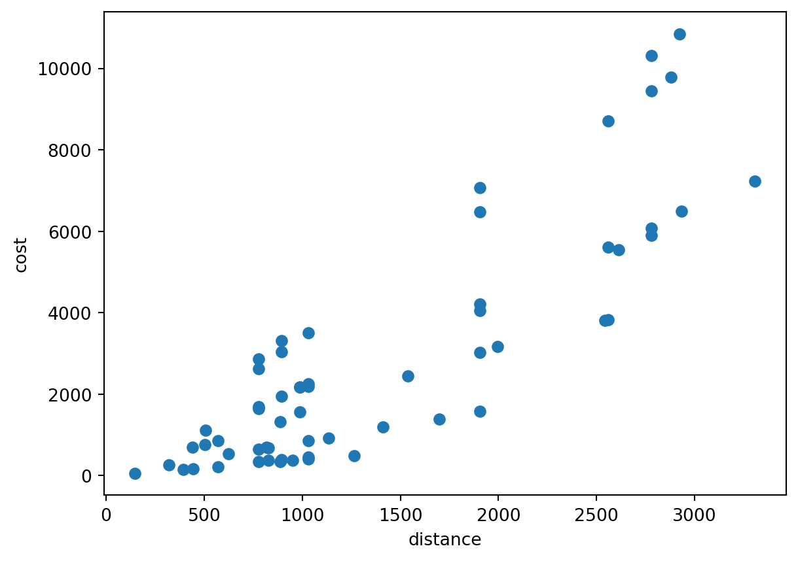
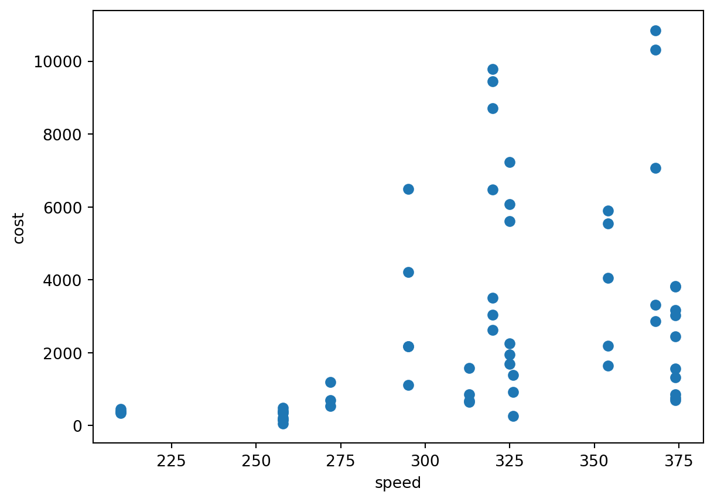
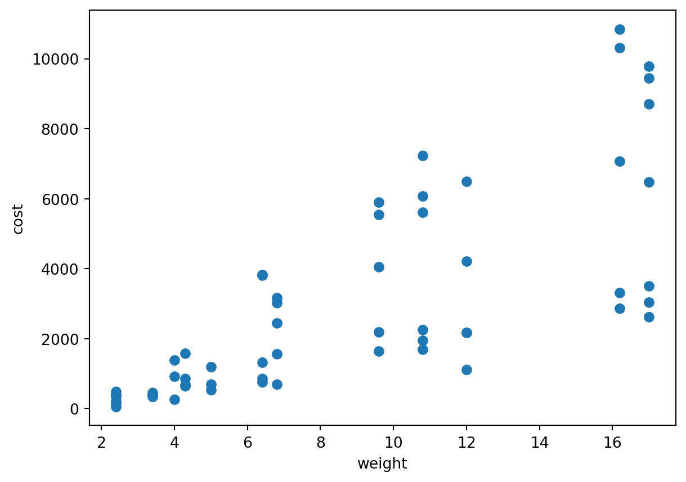

The aim of this analysis was to derive a simple equation that predicts the fuel cost in Pocket Planes using three observable aircraft/journey characteristics:
(D): flight distance
(S): aircraft speed
(W): aircraft weight
(C): observed in-game fuel cost
The final working model was:
\[
\hat{C} = kDSW
\]
where (k) is a scaling coefficient estimated from the observed data.
The current estimate is:
\[
k = 0.000623609
\]
giving:
\[
cost
=
0.000623609
\times D
\times S
\times W
\]
1. Construct the dataset
The first stage collects the observed values for each journey into a Polars DataFrame containing:
dist
speed
weight
cost
shape: (9, 5)
Raw data used for the analysis
statistic
dist
speed
weight
cost
str
f64
f64
f64
f64
"count"
60.0
60.0
60.0
60.0
"null_count"
0.0
0.0
0.0
0.0
"mean"
1392.801667
316.083333
8.596667
2870.833333
"std"
849.535171
47.866797
5.053878
2889.769888
"min"
147.1
210.0
2.4
55.0
"25%"
775.8
295.0
4.3
687.0
"50%"
1032.2
320.0
6.8
1953.0
"75%"
1906.2
354.0
12.0
3833.0
"max"
3307.6
374.0
17.0
10846.0
The dataset contained 60 observations. Each row therefore represents one observed flight for which the game’s actual fuel cost is known. The purpose of this dataset was to compare candidate mathematical relationships against the observed fuel costs.
2. Examine simple correlations with fuel cost
Pearson correlations are first calculated between fuel cost and each individual explanatory variable:
\[
C \text{ versus } D
\]
\[
C \text{ versus } S
\]
\[
C \text{ versus } W
\]
See code
echo: falsedata ={"value": [],"variable": []}for col in ["dist", "speed", "weight"]: r = df.select(pl.corr(col, "cost")).item() data["variable"].append(col) data["value"].append(f"{r:.6f}")simple_cor_df = pl.DataFrame(data)
Scatter plots were also constructed to visualise these relationships:

Figure 1: Relationship between cost and distance.

Figure 2: Relationship between cost and speed.

Figure 3: Relationship between cost and weight.
shape: (3, 2)
Pearson’s r correlations values with cost
value
variable
str
str
"0.860905"
"dist"
"0.419810"
"speed"
"0.760818"
"weight"
These exploratory analyses show: - distance, speed and weight have a broadly linear relationship with cost. - distance has a strong positive relationship with cost; - weight also has a strong positive relationship with cost; - speed has a weaker positive relationship with cost.
3. Construct candidate compound variables
Several plausible combinations of the three explanatory variables were then constructed.
These include:
\[
DW
\]
\[
DS
\]
\[
\frac{D}{S}
\]
\[
DWS
\]
and:
\[
\frac{DW}{S}
\]
Pearson correlations between each candidate term and observed fuel cost are then calculated (for full statistical results see the results file).
The best fitting compound variable was distance x weight x speed, with a substantially stronger correlation:
dist_weight_speed: r ≈ 0.999996
The product of these three variables is almost perfectly linearly related to cost and stongly indicated that the fuel equation was multiplicative.
\[
C \propto DWS
\]
4. Fit an additive regression model
An ordinary multiple linear regression was fitted as a comparison model:
\[
C = a + bD + cS + dW
\]
This model assumed that each variable contributes independently and additively to fuel cost.
For example, under an additive model, increasing aircraft weight by one unit would increase fuel cost by a fixed amount regardless of:
journey distance;
aircraft speed;
the aircraft’s existing weight.
This was used as a helpful comparison model to the multiplicative model being tests. If the multiplicative model fitter substantally better to observed fuel costs, this would support not treating distance, speed, and weight and independent models.
OLS Regression Results
Dep. Variable:
y
R-squared:
0.922
Model:
OLS
Adj. R-squared:
0.918
Method:
Least Squares
F-statistic:
220.4
Date:
Mon, 12 Oct 2026
Prob (F-statistic):
5.73e-31
Time:
16:26:19
Log-Likelihood:
-486.27
No. Observations:
60
AIC:
980.5
Df Residuals:
56
BIC:
988.9
Df Model:
3
Covariance Type:
nonrobust
coef
std err
t
P>|t|
[0.025
0.975]
const
-2181.8667
737.632
-2.958
0.005
-3659.521
-704.212
x1
2.2318
0.144
15.523
0.000
1.944
2.520
x2
-1.3375
2.570
-0.520
0.605
-6.485
3.810
x3
275.3396
25.494
10.800
0.000
224.268
326.411
Omnibus:
12.596
Durbin-Watson:
1.211
Prob(Omnibus):
0.002
Jarque-Bera (JB):
13.126
Skew:
1.025
Prob(JB):
0.00141
Kurtosis:
4.024
Cond. No.
1.14e+04
Notes: [1] Standard Errors assume that the covariance matrix of the errors is correctly specified. [2] The condition number is large, 1.14e+04. This might indicate that there are strong multicollinearity or other numerical problems.
Multiple linear regression model summary
5. Test the general multiplicative structure
The next stage tested a much more general multiplicative equation:
\[
C = kD^aW^bS^c
\]
Here:
(k) is a scaling constant;
(a) is the exponent for distance;
(b) is the exponent for weight;
(c) is the exponent for speed.
This model did not necessarily assume that the effect of each variable is linear. To estimate the exponents, the equation is transformed using logarithms.
The next diagnostic checked which value of (k) would be required to reproduce each individual observation exactly.
Rearranging:
\[
C=kDWS
\]
gives:
\[
k_i
=
\frac{C_i}
{D_iW_iS_i}
\]
This produced an implied_k value for every observed journey.
If the proposed multiplicative model is appropriate, these values should cluster tightly around a common value.
The current data gave approximately:
shape: (1, 5)
Implied values for k based on the model
mean
median
sd
min
max
f64
f64
f64
f64
f64
0.000622
0.000623
0.000003
0.000604
0.000626
The tight clustering provided further evidence that a single global coefficient is a reasonable approximation.
The fitted zero-intercept value:
\[
k=0.000623609
\]
also lies close to the centre of this distribution.
9. Examine (k) by aircraft type
Implied coefficients were also summarised seperately for combinations of aircraft speed and weight, as Pocket Planes may contain small aircraft-specific effects not represented by the variables in the model.
For example, for a Pearjet-P, partially upgraded so that its weight is 4.3 and speed is 313 currently has:
\[
\bar{k}\approx0.000615818
\]
which is somewhat lower than the global value.
Other aircraft combinations are much closer to:
\[
0.000623-0.000625
\]
This suggests that the equation:
\[
C=kDWS
\]
is an excellent general approximation, but there may be small aircraft-specific differences.
internal values of speed or weight differing slightly from the displayed values;
rounding in the displayed aircraft statistics;
rounding or integerisation within the game’s own calculation.
These differences are not currently large enough to justify a more complicated model for the intended simulation.
The purpose of this analysis is therefore not to force every aircraft to have exactly the same implied (k), but to check that variation remains sufficiently small for one global coefficient to provide accurate predictions.
10. Generate predicted fuel costs
The preferred coefficient is then used to generate fuel-cost predictions:
\[
\hat{C}
=
0.000623609170DWS
\]
Because the game presents fuel cost as a whole number, the prediction is rounded:
\[
\boxed{
\hat{C}
=
\operatorname{round}
\left(
0.000623609170
\times
D
\times
W
\times
S
\right)
}
\]
RMSE penalises relatively large errors more strongly than MAE, making it useful for detecting whether a small number of journeys are predicted particularly poorly.
Maximum absolute error
The largest observed absolute prediction error is currently:
\[
21
\]
fuel units.
This provides a useful indication of the worst discrepancy in the observed sample.
Percentage error
Because fuel costs vary substantially between journeys, absolute errors alone can be misleading.
For each observation, absolute percentage error is therefore calculated as:
mean percentage error = 0.319% median percentage error = 0.187% maximum percentage error = 3.64%
The mean and median errors are both substantially below 1%.
This indicates that the equation provides a very close but not perfect approximation to the game’s fuel costs across the observed data.
shape: (1, 6)
Discrepancies between the fuel cost predicted by the model and the ones shown in the game
MAE
RMSE
max_absolute_error
mean_percent_error
median_percent_error
max_percent_error
f64
f64
f64
f64
f64
f64
5.366667
7.754569
21.0
0.318613
0.186632
3.636364
12. Inspect the worst predictions
The ten observations with the largest percentage errors are retained for inspection.
This serves two purposes.
First, it identifies potential data-entry errors or unusual observations.
Second, it indicates whether poor predictions cluster around a particular aircraft.
For example, several relatively large differences currently occur for the upgraded Pearjet-P in the dataset with:
speed = 313 weight = 4.3
This corresponds with the slightly lower implied (k) estimated for this aircraft.
The largest percentage error currently occurs for an upgraded FondaJet-P with speed of 258 and weight of 2.4:
actual cost = 55 predicted cost = 57
which gives approximately:
\[
3.64\%
\]
Although this is the largest percentage error, the absolute discrepancy is only two fuel units. The apparently large percentage therefore results primarily from the small denominator.
Summary and final model
The evidence supporting the multiplicative equation is strong and consistent across many observations.
Distance multiplied by weight and speed has an almost perfect correlation with observed fuel cost:
\[
r\approx0.999996
\]
In addition, the general log-log model estimates exponents extremely close to 1 for distance, weight and speed.
The direct regression of cost on (DWS) gives:
\[
R^2\approx0.999993
\]
The individual implied values of (k) cluster also tightly around the fitted global coefficient.
Overall, the predictions from the zero-intercept model have:
mean absolute error of approximately 5 fuel units;
mean percentage error of approximately 0.32%;
median percentage error of approximately 0.19%.
Taken together, these results support the working equation:
\[
\boxed{
\hat{C}
=
0.00062361
\times
D
\times
S
\times
W
}
\]
This equation should be regarded as an empirical approximation to the game’s fuel-cost algorithm rather than proof of the game’s exact internal implementation.
As additional observations are collected, the workflow can be rerun and the model can be tested more.
Source Code
---title: "Calculating fuel efficiencey in NimbleBit's Pocket Planes"author: - name: "Jaycee Kennett"date: todaydate-format: "D MMMM YYYY"format: html: theme: flatly code-tools : true code-fold: true code-summary: "See code" ---```{python}# prepareimport polars as plimport matplotlib.pyplot as pltfrom pathlib import Pathimport jsonfrom typing import Anyimport pocket_planes_utils as ppuimport numpy as npfrom scipy.stats import linregress, pearsonrpath ="data"airports = ppu.load_data(path)trips = ppu.load_trips(path)# ---- prep for building pl.DataFramedata = {"dist": [],"speed": [],"weight": [],"cost": []}for t in trips: data["dist"].append(t.dist) data["speed"].append(t.speed) data["weight"].append(t.weight) data["cost"].append(t.cost)results = []df = pl.DataFrame(data, strict=False)```# Deriving Pocket Planes' fuel-cost equation## AimPocket Planes is developed by [Nimblebit](https://nimblebit.com)The aim of this analysis was to derive a simple equation that predicts the fuel cost in Pocket Planes using three observable aircraft/journey characteristics:- \(D\): flight distance- \(S\): aircraft speed- \(W\): aircraft weight- \(C\): observed in-game fuel costThe final working model was:$$\hat{C} = kDSW$$where \(k\) is a scaling coefficient estimated from the observed data.The current estimate is:$$k = 0.000623609$$giving:$$cost =0.000623609\times D\times S\times W$$---## 1. Construct the datasetThe first stage collects the observed values for each journey into a Polars DataFrame containing:- `dist`- `speed`- `weight`- `cost````{python}#| label: dataset-description#| tbl-cap: "Raw data used for the analysis"#| echo: falsedf.describe()```The dataset contained `{python} df.height` observations.Each row therefore represents one observed flight for which the game's actual fuel cost is known.The purpose of this dataset was to compare candidate mathematical relationships against the observed fuel costs.---## 2. Examine simple correlations with fuel costPearson correlations are first calculated between fuel cost and each individual explanatory variable:$$C \text{ versus } D$$$$C \text{ versus } S$$$$C \text{ versus } W$$```{python}echo: falsedata ={"value": [],"variable": []}for col in ["dist", "speed", "weight"]: r = df.select(pl.corr(col, "cost")).item() data["variable"].append(col) data["value"].append(f"{r:.6f}")simple_cor_df = pl.DataFrame(data)```Scatter plots were also constructed to visualise these relationships:```{python}#| label: fig-dist-scatter#| fig-cap: "Relationship between cost and distance."#| fig-width: 8#| fig-height: 5#| fig-align: center#| echo: falseplt.figure()plt.scatter(df["dist"], df["cost"])plt.xlabel("distance")plt.ylabel("cost")plt.show()``````{python}#| label: fig-speed-scatter#| fig-cap: "Relationship between cost and speed."#| fig-width: 8#| fig-height: 5#| fig-align: center#| echo: falseplt.figure()plt.scatter(df["speed"], df["cost"])plt.xlabel("speed")plt.ylabel("cost")plt.show()``````{python}#| label: fig-weight-scatter#| fig-cap: "Relationship between cost and weight."#| fig-width: 8#| fig-height: 5#| fig-align: center#| echo: falseplt.figure()plt.scatter(df["weight"], df["cost"])plt.xlabel("weight")plt.ylabel("cost")plt.show()``````{python}#| label: simple-correlation-results#| tbl-cap: "Pearson's r correlations values with cost"#| echo: falsesimple_cor_df```These exploratory analyses show:- distance, speed and weight have a broadly linear relationship with cost.- distance has a strong positive relationship with cost;- weight also has a strong positive relationship with cost;- speed has a weaker positive relationship with cost.---## 3. Construct candidate compound variablesSeveral plausible combinations of the three explanatory variables were then constructed.These include:$$DW$$$$DS$$$$\frac{D}{S}$$$$DWS$$and:$$\frac{DW}{S}$$```{python}#| echo: falsedf = df.with_columns( (pl.col("dist") * pl.col("weight")).alias("dist_weight"), (pl.col("dist") * pl.col("speed")).alias("dist_speed"), (pl.col("dist") / pl.col("speed")).alias("dist_speed_ratio"), ( pl.col("dist")* pl.col("weight")* pl.col("speed") ).alias("dist_weight_speed"), ( pl.col("dist")* pl.col("weight")/ pl.col("speed") ).alias("dist_weight_over_speed"),)candidates = ["dist","weight","speed","dist_weight","dist_speed","dist_speed_ratio","dist_weight_speed","dist_weight_over_speed",]results.append("\nCORRELATIONS FOR CANDIDATE PREDICTORS")for col in candidates: r = df.select(pl.corr(col, "cost")).item() results.append(f"{col}: r = {r:.6f}")```Pearson correlations between each candidate term and observed fuel cost are then calculated (for full statistical results see the results file).The best fitting compound variable was distance x weight x speed, with a substantially stronger correlation:`dist_weight_speed`: r ≈ 0.999996The product of these three variables is almost perfectly linearly related to cost and stongly indicated that the fuel equation was multiplicative.$$C \propto DWS$$---## 4. Fit an additive regression model```{python}#| echo: falseimport statsmodels.api as smresults.append("\nADDITIVE MODEL")results.append("Model: cost = a + b*dist + c*speed + d*weight")X = df.select("dist","speed","weight",).to_numpy()y = df["cost"].to_numpy()X_const = sm.add_constant(X)model_additive = sm.OLS(y, X_const).fit()results.append(model_additive.summary().as_text())```An ordinary multiple linear regression was fitted as a comparison model:$$C = a + bD + cS + dW$$This model assumed that each variable contributes independently and additively to fuel cost.For example, under an additive model, increasing aircraft weight by one unit would increase fuel cost by a fixed amount regardless of:- journey distance;- aircraft speed;- the aircraft's existing weight.This was used as a helpful comparison model to the multiplicative model being tests.If the multiplicative model fitter substantally better to observed fuel costs, this would support not treating distance, speed, and weight and independent models.```{python}#| label: additive-reg-results#| tbl-cap: "Multiple linear regression model summary"#| echo: falsemodel_additive.summary()```---## 5. Test the general multiplicative structure```{python}#| echo: falseresults.append("\nMULTIPLICATIVE STRUCTURE")results.append("Model: log(cost) = log(k) + ""a*log(dist) + b*log(weight) + c*log(speed)")X_log = np.column_stack([ np.log(df["dist"].to_numpy()), np.log(df["weight"].to_numpy()), np.log(df["speed"].to_numpy()),])X_log = sm.add_constant(X_log)y_log = np.log(df["cost"].to_numpy())model_log = sm.OLS(y_log, X_log).fit()results.append(model_log.summary().as_text())log_k, a_dist, b_weight, c_speed = model_log.paramsresults.append("\nEstimated multiplicative exponents:")results.append(f"distance exponent: {a_dist:.6f}")results.append(f"weight exponent: {b_weight:.6f}")results.append(f"speed exponent: {c_speed:.6f}")results.append(f"log(k): {log_k:.6f}")results.append(f"k from log model: {np.exp(log_k):.10f}")```The next stage tested a much more general multiplicative equation:$$C = kD^aW^bS^c$$Here:- \(k\) is a scaling constant;- \(a\) is the exponent for distance;- \(b\) is the exponent for weight;- \(c\) is the exponent for speed.This model did not necessarily assume that the effect of each variable is linear.To estimate the exponents, the equation is transformed using logarithms.Starting with:$$C = kD^aW^bS^c$$taking logarithms gives:$$\log(C)=\log(k)+a\log(D)+b\log(W)+c\log(S)$$This converts the multiplicative equation into a standard linear regression.The estimated coefficients of the logged variables therefore directly estimate the exponents \(a\), \(b\), and \(c\).The current estimates were very close to 1:distance exponent = 1.004554weight exponent = 1.000908speed exponent = 0.995729Therefore:$$D^{1.004554}\approxD$$$$W^{1.000908}\approxW$$and:$$S^{0.995729}\approxS$$There was therefore little evidence that any of the three variables requires a nonlinear exponent.The general model:$$C=kD^aW^bS^c$$can consequently be simplified to:$$\boxed{C \approx kDWS}$$This step is confirms the compound variable model---## 6. Construct the single multiplicative predictorAs the evidence supported:$$C = kDWS$$a single predictor was created:$$X = DWS$$The problem was then reduced to estimating the relationship:$$C = a+kX$$or equivalently:$$C=a+kDWS$$A simple linear regression was fitted between observed fuel cost and \(DWS\).```{python}results.append("\nDWS MODEL")results.append("Model: cost = a + k*(dist * weight * speed)")x = ( df["dist"].to_numpy()* df["weight"].to_numpy()* df["speed"].to_numpy())y = df["cost"].to_numpy()fit_intercept = linregress(x, y)results.append("\nModel with intercept:")results.append(f"slope k: {fit_intercept.slope:.12f}")results.append(f"intercept: {fit_intercept.intercept:.6f}")results.append(f"R^2: {fit_intercept.rvalue**2:.8f}")```The current model gave approximately:$$C=-1.57+0.000623780(DWS)$$with:$$R^2 \approx 0.999993$$This is an exceptionally close relationship with 99.9993% of the variation in fuel cost being explained by the model.An \(R^2\) this close to 1 indicates that almost all observed variation in fuel cost is explained by the single quantity:$$DWS$$The very small intercept also suggested that a separate fixed fuel cost may not be necessary.---## 7. Compare models with and without an interceptTwo versions of the multiplicative model were compared, one with an intercept, and one without.```{python}k_zero = np.sum(x * y) / np.sum(x**2)results.append("\nZero-intercept model:")results.append(f"k: {k_zero:.12f}")pred_intercept = ( fit_intercept.intercept+ fit_intercept.slope * x)pred_zero = k_zero * xmae_intercept = np.mean( np.abs(y - pred_intercept))mae_zero = np.mean( np.abs(y - pred_zero))rmse_intercept = np.sqrt( np.mean((y - pred_intercept) **2))rmse_zero = np.sqrt( np.mean((y - pred_zero) **2))results.append("\nModel comparison:")results.append(f"Intercept model MAE: {mae_intercept:.6f}")results.append(f"Zero-intercept model MAE: {mae_zero:.6f}")results.append(f"Intercept model RMSE: {rmse_intercept:.6f}")results.append(f"Zero-intercept model RMSE: {rmse_zero:.6f}")```### Model with an intercept$$C=a+kDWS$$The current fitted values are approximately:$$a=-1.57$$and:$$k=0.000623780$$### Model constrained through zeroThe second model assumes:$$C=kDWS$$This imposed the intuitive condition:$$D=0\RightarrowC=0$$In other words, a journey of zero distance should require zero fuel.For a regression constrained through zero, \(k\) was estimated using:$$k=\frac{\sum X_iC_i}{\sum X_i^2}$$where:$$X_i=D_iW_iS_i$$The current estimate is:$$\boxed{k=0.000623609170}$$The models were compared using both mean absolute error and root mean squared error.This gave:Intercept model MAE = 5.48Zero-intercept model MAE = 5.43Intercept model RMSE = 7.72Zero-intercept model RMSE = 7.80The differences were extremely small.The intercept model had a marginally lower RMSE, while the zero-intercept model had a marginally lower MAE.Because:- the intercept itself is very small- the zero-intercept model is simpler- zero distance should logically imply zero fuel cost- predictive performance is essentially equivalentThe working equation therefore became:$$\boxed{C=kDWS}$$---## 8. Examine the implied value of \(k\) for individual observations```{python}df = df.with_columns( ( pl.col("cost")/ ( pl.col("dist")* pl.col("weight")* pl.col("speed") ) ).alias("implied_k"))k_summary = df.select( pl.col("implied_k").mean().alias("mean"), pl.col("implied_k").median().alias("median"), pl.col("implied_k").std().alias("sd"), pl.col("implied_k").min().alias("min"), pl.col("implied_k").max().alias("max"),)results.append("\nIMPLIED K VALUES")results.append(str(k_summary))k_by_aircraft = ( df.group_by(["speed", "weight"]) .agg( pl.len().alias("n"), pl.col("implied_k").mean().alias("mean_k"), pl.col("implied_k").std().alias("sd_k"), pl.col("implied_k").min().alias("min_k"), pl.col("implied_k").max().alias("max_k"), ) .sort("mean_k"))results.append("\nIMPLIED K BY SPEED/WEIGHT")results.append(str(k_by_aircraft))```The next diagnostic checked which value of \(k\) would be required to reproduce each individual observation exactly.Rearranging:$$C=kDWS$$gives:$$k_i=\frac{C_i}{D_iW_iS_i}$$This produced an `implied_k` value for every observed journey.If the proposed multiplicative model is appropriate, these values should cluster tightly around a common value.The current data gave approximately:```{python}#| label: implied-k-description#| tbl-cap: "Implied values for k based on the model"#| echo: falsek_summary```The tight clustering provided further evidence that a single global coefficient is a reasonable approximation.The fitted zero-intercept value:$$k=0.000623609$$also lies close to the centre of this distribution.---## 9. Examine \(k\) by aircraft typeImplied coefficients were also summarised seperately for combinations of aircraft speed and weight, as Pocket Planes may contain small aircraft-specific effects not represented by the variables in the model.For example, for a Pearjet-P, partially upgraded so that its weight is 4.3 and speed is 313 currently has:$$\bar{k}\approx0.000615818$$which is somewhat lower than the global value.Other aircraft combinations are much closer to:$$0.000623-0.000625$$This suggests that the equation:$$C=kDWS$$is an excellent general approximation, but there may be small aircraft-specific differences.Possible explanations include:- hidden aircraft-specific fuel-efficiency parameters;- internal values of speed or weight differing slightly from the displayed values;- rounding in the displayed aircraft statistics;- rounding or integerisation within the game's own calculation.These differences are not currently large enough to justify a more complicated model for the intended simulation.The purpose of this analysis is therefore not to force every aircraft to have exactly the same implied \(k\), but to check that variation remains sufficiently small for one global coefficient to provide accurate predictions.---## 10. Generate predicted fuel costsThe preferred coefficient is then used to generate fuel-cost predictions:$$\hat{C}=0.000623609170DWS$$Because the game presents fuel cost as a whole number, the prediction is rounded:$$\boxed{\hat{C}=\operatorname{round}\left(0.000623609170\timesD\timesW\timesS\right)}$$In Python, this is equivalent to:```pythondef predict_fuel_cost(distance: float, speed: float, weight: float) ->int:returnround(0.000623609170* distance * speed * weight)```For practical use, there is little reason to retain all of the decimal places in the fitted coefficient. The simplified version:```pythondef predict_fuel_cost(distance: float, speed: float, weight: float) ->int:returnround(0.00062361* distance * speed * weight)```is adequate.---## 11. Evaluate prediction errorSeveral error metrics were calculated to determine how closely the equation reproduced observed game values.```{python}#| echo: falsek =float(k_zero)df = df.with_columns( ( k* pl.col("dist")* pl.col("speed")* pl.col("weight") ).round().alias("predicted_cost")).with_columns( ( pl.col("predicted_cost")- pl.col("cost") ).alias("error"), ( ( pl.col("predicted_cost")- pl.col("cost") ).abs()/ pl.col("cost")*100 ).alias("percent_error"),)performance = df.select( pl.col("error").abs().mean().alias("MAE"), ( pl.col("error") .pow(2) .mean() .sqrt() ).alias("RMSE"), pl.col("error") .abs() .max() .alias("max_absolute_error"), pl.col("percent_error") .mean() .alias("mean_percent_error"), pl.col("percent_error") .median() .alias("median_percent_error"), pl.col("percent_error") .max() .alias("max_percent_error"),)results.append("\nFINAL ZERO-INTERCEPT MODEL PERFORMANCE")results.append(str(performance))worst_predictions = ( df.select("dist","speed","weight","cost","predicted_cost","error","percent_error", ) .sort("percent_error", descending=True, ) .head(10))results.append("\n10 WORST PREDICTIONS")results.append(str(worst_predictions))```### Mean absolute errorMean absolute error is:$$MAE=\frac{1}{n}\sum_{i=1}^{n}\left|C_i-\hat{C}_i\right|$$The current value is approximately:$$MAE=5.36$$This means that, on average, predicted fuel cost differs from the game's value by approximately five fuel units.---### Root mean squared errorRMSE is:$$RMSE=\sqrt{\frac{1}{n}\sum_{i=1}^{n}(C_i-\hat{C}_i)^2}$$The current value is approximately:$$RMSE=7.75$$RMSE penalises relatively large errors more strongly than MAE, making it useful for detecting whether a small number of journeys are predicted particularly poorly.---### Maximum absolute errorThe largest observed absolute prediction error is currently:$$21$$fuel units.This provides a useful indication of the worst discrepancy in the observed sample.---### Percentage errorBecause fuel costs vary substantially between journeys, absolute errors alone can be misleading.For each observation, absolute percentage error is therefore calculated as:$$\text{percentage error}=\frac{|\hat{C}-C|}{C}\times100$$Current performance is approximately:mean percentage error = 0.319%median percentage error = 0.187%maximum percentage error = 3.64%The mean and median errors are both substantially below 1%.This indicates that the equation provides a very close but not perfect approximation to the game's fuel costs across the observed data.```{python}#| label: performance#| tbl-cap: "Discrepancies between the fuel cost predicted by the model and the ones shown in the game"#| echo: falseperformance```---## 12. Inspect the worst predictionsThe ten observations with the largest percentage errors are retained for inspection.This serves two purposes.First, it identifies potential data-entry errors or unusual observations.Second, it indicates whether poor predictions cluster around a particular aircraft.For example, several relatively large differences currently occur for the upgraded Pearjet-P in the dataset with:speed = 313weight = 4.3This corresponds with the slightly lower implied \(k\) estimated for this aircraft.The largest percentage error currently occurs for an upgraded FondaJet-P with speed of 258 and weight of 2.4:actual cost = 55predicted cost = 57which gives approximately:$$3.64\%$$Although this is the largest percentage error, the absolute discrepancy is only two fuel units. The apparently large percentage therefore results primarily from the small denominator.---# Summary and final modelThe evidence supporting the multiplicative equation is strong and consistent across many observations.Distance multiplied by weight and speed has an almost perfect correlation with observed fuel cost:$$r\approx0.999996$$In addition, the general log-log model estimates exponents extremely close to 1 for distance, weight and speed.The direct regression of cost on \(DWS\) gives:$$R^2\approx0.999993$$The individual implied values of \(k\) cluster also tightly around the fitted global coefficient.Overall, the predictions from the zero-intercept model have:- mean absolute error of approximately 5 fuel units;- mean percentage error of approximately 0.32%;- median percentage error of approximately 0.19%.Taken together, these results support the working equation:$$\boxed{\hat{C}=0.00062361\timesD\timesS\timesW}$$This equation should be regarded as an empirical approximation to the game's fuel-cost algorithm rather than proof of the game's exact internal implementation.As additional observations are collected, the workflow can be rerun and the model can be tested more.```{python}#| echo: falseres ="\n".join(results)withopen("fuel_cost_model_results.txt","w", encoding="utf-8",) as f: f.write(res)```